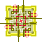

Eureka!

click on the image to run the animation. speed up or down by changing "del" variable in the script.
includes a preload function i wrote a long time ago, to automate the proloading of images in a numbered series... it seems to work.